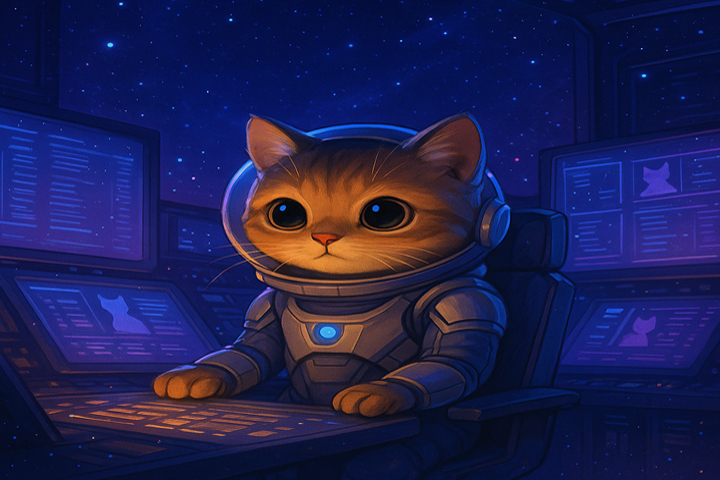

Bienvenido terricola
¡Alerta, tripulante! Estás en el Centro de Operaciones de la Estación Espacial Número 57, cuartel general de la fuerza de élite más peluda de la galaxia: Guardianes de los Michis. Somos el comando número uno en protección animal, rescatando gatitos de nebulosas traicioneras, planetas con gravedad anti-ronroneos y las garras de aspiradoras interdimensionales. Nuestra misión: garantizar que cada michi encuentre un hogar estelar donde sea adorado como el capitán que es.
¿Listo para adoptar un copiloto galáctico?
Adoptar un michi con nosotros no es solo llevarte un gato, ¡es reclutar a un héroe espacial! Pero ojo, futuro comandante, hay protocolos que seguir:
-
Vacunación y castración
Todos nuestros michis vienen con su kit de inmunidad galáctica (vacunas al día) y están castrados para evitar mini-invasiones felinas no autorizadas.
-
Cuidados estelares
Cada adoptante recibe un Manual de Supervivencia Felina con tips para mantener a tu michi sano, feliz y lejos de los láseres domésticos (léase: punteros).
-
Seguimiento interplanetario
No te dejaremos solo en esta misión. Nuestro equipo de rastreo (tranqui, son solo humanos disfrazados de gatos) hará visitas y llamadas para asegurarse de que tu michi está conquistando tu sofá como se merece.
-
Condiciones de adopción
Para unirte a la tripulación, necesitarás un hogar seguro (sin agujeros negros ni perros con complejo de Darth Vader), compromiso de amor eterno y una ración mensual de latitas premium.
¿Preparado para que un michi te elija como su copiloto? Únete a la misión y descubre cómo un ronroneo puede cambiar tu órbita. ¡Despegue inminente! 🚀😺